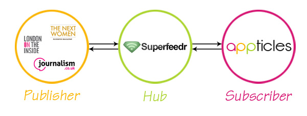

Appticles
 By Julien, on 06 Feb 2013
By Julien, on 06 Feb 2013Appticles.com is a mobile content delivery and monetization platform for small and medium publishers completely based around the concept of Open Web and HTML5 and it is being developed by Webcrumbz.co. They’re using Superfeedr as you’ll see below and we opened the door of this blog to them!
We’ve integrated with Superfeedr and we love it!
Ever since we started working with RSS/ATOM feeds from our publishers, it became obvious for us that we needed a simple and robust solution to keep the content flowing, allowing their mobile readers to always enjoy the latest news/articles on their mobile web application.
We dug a bit around the Pubsubhubbub real-time web protocol as it seemed the right solution for our situation. In essence, the main purpose was to provide near-instant notifications of feeds updates, which would represent a consistent improvement on the typical situation where we had to periodically poll the feeds at some arbitrary interval.
In essence, PuSH can be described as:
- A simple publish/subscribe protocol
- Turns Atom and RSS feeds into real-time streams
- Web-scale, low-latency messaging
- Three participants: Publisher, Subscriber, Hubs.
Although this stuff is pretty technical, from a publisher’s perspective, it means that you have to have this on the header of your RSS feed:
<link rel=”hub” href=”https://pubsubhubbub.appspot.com/” />
And whenever you add a new article in the feed, you should send a ping to the Hub with the feed URL. From here onwards, the Hub is taking care of pushing the new content to all of your subscribers (including Appticles). The good news is that if your website is based on Wordpress, Drupal or Joomla it’s just a matter of installing a plugin to make it work, leaving the rest up to us.
Even in the absence of the PuSH protocol (no Hub declaration in your RSS/ATOM feeds) we’re making sure your mobile web application is updated regularly. This obviously means that the infrastructure behind the scene is pretty complex and we couldn’t have done it without our trusted partner, Superfeedr.com. They’ve built a complex feed fetching and parsing infrastructure so we didn’t have to, allowing us focus on what we’re best at: providing you with awesome mobile HTML5 applications to help you grow your mobile readership.

Going into technicalities, our integration with Superfeedr.com had 2 phases: subscribing/unsubscribing and parsing the new content when we’re notified.
Subscribing/Unsubscribing
In the above scheme our platform, Appticles.com, is a subscriber. This means that for every feed a publisher is adding into the platform to create its mobile HTML5 application we have to do the following operations to subscribe to that feed:
- Detect the Hub declaration in the feed
- Send a subscribe request to the feed’s Hub or to Superfeedr.com if we can’t find any Hub declaration in your feed.
- The Hub sends back a request to verify the subscription and we have to answer accordingly.
Unsubscribing from a feed is done in a similar way, whenever a feed is deleted from our platform. A couple of inspirational integrations that we’ve used are: a simple PHP Superfeedr subscriber library which got us started, a basic NodeJs Pubsubhubbub library and the PubSubSuperfeedr Python library from Urban Airship that we actually integrated in our platform.
Parsing the content
After the subscription has been made we’re ready to receive new content. Because our mobile HTML5 applications have a specific way of displaying the news/articles we have to export the content in a certain format, which is done through our parsing daemon.
So far so good, everything runs smoothly and we’re happy we’ve found a great partner in Superfeedr.com. You may ask why we chose them instead of others? To be honest, that was mainly because it was impossible for us to escape Julien’s helpful comments every time we’ve posted some question about Pubsubhubbub on Stackoverflow.
Also, he was there every time we needed him over e-mail or Twitter, which made the integration super easy and fun.
Liked this post? to get more or read the archive.
Comments